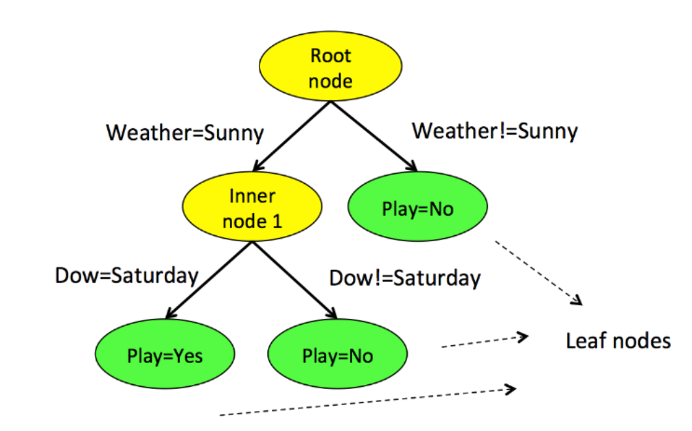
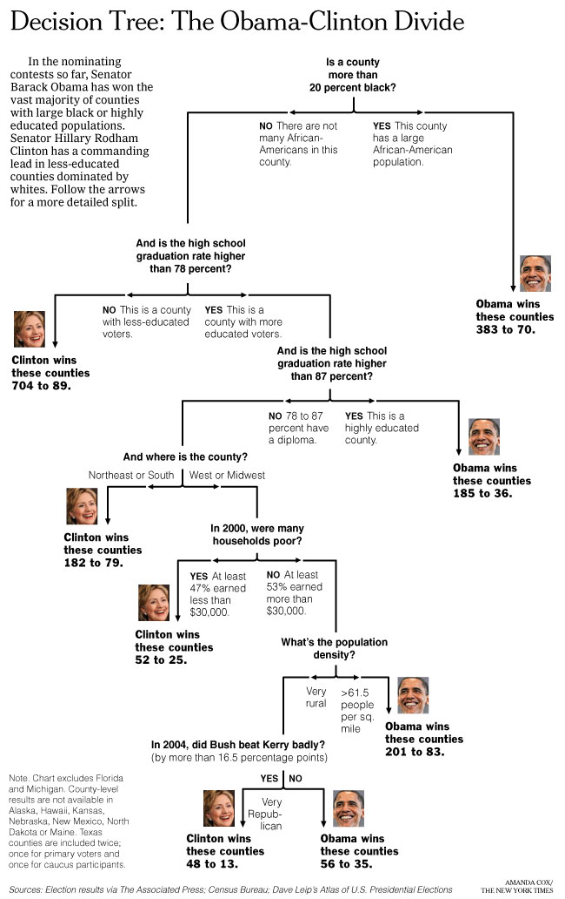
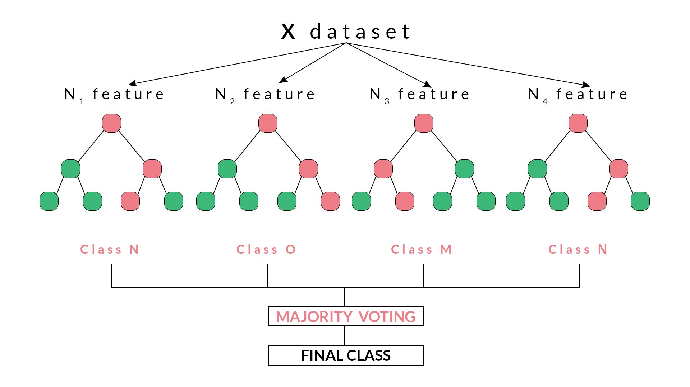
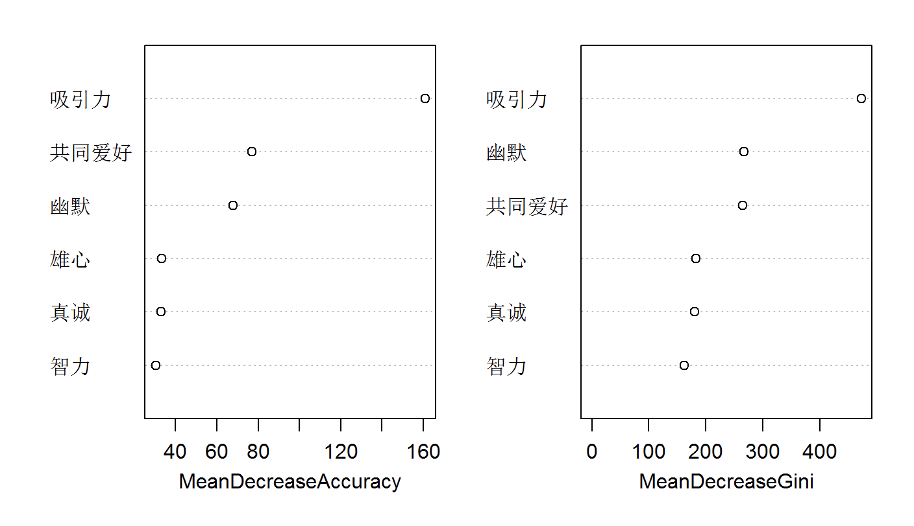

决策树与随机森林
AI 2.0 机器学习：
从一棵可解释的树，到一片稳健的森林
本讲要回答三个问题
机器如何
“长”出一棵树？
每一步问一个最能“分清”结果的问题：熵、信息增益、阈值、剪枝。
单棵树不稳，
怎么办？
用均值降低方差：自助抽样 + 随机选特征 + 投票。
业务里
该选哪一个？
可解释、稳定性与精度的取舍；2025–2026 表格数据建模的新进展。
分类回归树CART
人类的知识，
常常就是一棵树

根节点问天气；非晴天 → 取消；晴天再问是否周六。每个叶节点就是一条规则。

反过来：给定数据，先问哪个问题？
6 天记录：天气、星期几，以及比赛是否举行（Play）。
好问题 = 把“比赛 / 取消”分得更纯。
“更纯”怎么量化？→ 下一页：熵。
熵：节点有多“乱”
全是同一类 → 熵为 0；两类各半 → 熵最大。熵越小，节点越“纯”。
信息增益：分裂前后的熵之差
递归：
对子节点重复同一步
树长到什么程度，该停了？
树的深度
最多问几层问题。层数越多，规则越细、越容易“背答案”。
叶节点样本数
每片叶子至少要有多少条记录——样本太少的规则不可信。
不纯度改进
再分裂带来的信息增益小于阈值，就不值得再问。
先长满，再剪回去（后剪枝，如 CART 的代价复杂度剪枝）通常比边长边停更稳。
这些“旋钮”决定偏差与方差的取舍——拖动旋钮试试 → 第 12 页。
温度是连续的：
切在哪个度数？
候选问题：温度 ≥ s ？ 对晴天的 8 次记录，逐个试 s，仍按信息增益最大选择。
预测冰淇淋收入：
用两个均值分段
mins ΣR₁(yi − ŷR₁)² + ΣR₂(yi − ŷR₂)²
树 = 把特征空间切成矩形
深度加大：训练准确率一路升，测试准确率先升后平甚至降 → 过拟合。
回归树：分段常数的阶梯
两种模型，两种“解释”
树：好用，但不稳
容易处理缺失值 ⚠
典型实现用“代理分裂”等机制；是否原生支持随软件版本而异。
容易处理离散变量 ⚠
类别型特征可直接分组分裂；部分 Python 实现需先编码。
规则可读
每条根到叶的路径就是一条业务规则，可审计、可沟通。
阈值不稳定
训练数据稍有变化，选出的分裂变量与阈值就可能不同。
预测精度不稳定
方差大：单棵树对数据的“扰动”极其敏感，容易过拟合。
下一页：亲眼看看“不稳”
对同一份数据反复重抽样，树怎么变？
同一批数据，
换个样本，树就变
每次从 500 封训练邮件中有放回抽 100 封，长一棵深度 ≤ 3 的树。统计根节点用了哪个特征。
随机森林
一个想法：
取平均
var(X̄) = var( (1/n) Σ Xi ) = σ² / n
var(X̄) = ρσ² + (1 − ρ)σ² / n
树之间越不相关，平均越有效 —— 这就是“随机”二字的用意。
让每棵树都不一样

自助抽样 Bootstrap
有放回地抽 n 条样本，每棵树看到的数据不同。
每次分裂只考虑 m 个特征
随机选出 m 个候选，降低树与树之间的相关性 ρ。
多数投票 / 取平均
分类：投票；回归：平均。树本身不剪枝，各自长满。
树越多，测试误差越稳
数据：真实邮件，500 训练 / 300 测试；每棵树不剪枝。多棵树的“平均”带来稳定提升。
森林：更稳更准，但看不见树了
继承树的长处
分类、回归都适用；易处理缺失与因子型数据。
更高阶的交互规则
多棵树合起来，能表达更复杂的变量交互。
稳定、精度高
平均降方差：预测更稳，通常显著好于单棵树。
丧失图形化解释
几百棵树无法逐一阅读，只能借助“变量重要性”等间接解释。
计算更重
训练与预测时间随树数增长（可并行）。
解释性 ↔ 精度
单树 → 森林：用一部分可解释性换取稳定性与精度。
看不见树，
但能看见谁更重要

Gini：该变量在所有树的分裂中带来的不纯度下降之和。
置换：打乱该变量后，测试准确率下降多少。
⚠ Gini 重要性偏向取值多的连续变量；变量相关时重要性会被分摊，解读需谨慎。
深度学习时代，表格数据仍是树的主场
树模型仍优于深度学习
Grinsztajn 等在多数据集基准上发现：中等规模表格数据中，树类模型（RF、梯度提升）整体仍占优。
差距在收窄
“活”基准：梯度提升树仍有很强的性价比；深度模型经充分调参 + 集成后可追平甚至超过；小数据上基础模型最强。
不是二选一
跨模型集成优于任何单一模型族。树模型仍是表格业务的稳妥基线。
树的启示不过时：先建强基线，再谈复杂模型。
另一条路：串行地纠错
AI 4.0 的思路，进入表格数据
预训练一次，上下文里“读表”
TabPFN：在海量合成数据集上预训练的 Transformer；新任务不再训练，把训练表放进输入，一次前向传播给出预测。
小数据上超过调参后的树
论文报告：≤10,000 样本、≤500 特征的基准上，平均约 2.8 秒的分类预测优于调参 4 小时的强基线集成。
规模扩大到 5 万 × 2 千
技术报告称支持至 50,000 样本、2,000 特征，在 TabArena 上优于调参后的 XGBoost / CatBoost。
⚠ 结果多为作者自报；大样本、高维稀疏、需要可审计规则的场景，树模型仍是首选基线。
应用与展望
每个决定，
都有一条可复述的路径
⚠ 阈值为教学示意，非真实风控规则。
先问需求，再选模型
AI 2.0：特征 + 学习算法
本讲小结
递归地问“最能分清”的问题
熵 → 信息增益；回归用 RSS；深度与叶样本数控制复杂度。
单棵树方差大
阈值与精度对数据扰动敏感，深树易过拟合。
平均降方差
自助抽样 + 随机特征 + 投票，用部分可解释性换稳定与精度。
树仍是基线
提升法与表格基础模型在进步；先建强基线，再谈复杂。
一句话：可解释用树，要稳要准用森林，要最强则集成与对比。
课后练习
手算：把篮球数据再加一行（ID 7：Sunny, Tuesday, Yes），重算两个候选分裂的信息增益，根节点会变吗？
实验：回到第 12 页，调节深度与叶最少样本，找出测试准确率最高的组合，并说明为什么。
选型：为“客户流失预警”写一页选型说明：用单树还是森林？解释性要求是什么？
用 AI 助手：让 AI 写代码训练随机森林并解读变量重要性，检查它是否把“重要”误说成了“因果”。
谢谢！
Q & A
常象宇 · 西安交通大学 管理学院
xiangyuchang@xjtu.edu.cn
下一讲：Lecture 6.1 深度学习（AI 3.0）

参考文献 R1–R11
R1 Breiman, Friedman, Olshen & Stone (1984). Classification and Regression Trees. Wadsworth.
R2 Breiman, L. (2001). Random Forests. Machine Learning 45(1), 5–32.
R3 Hastie, Tibshirani & Friedman (2009). The Elements of Statistical Learning, 2nd ed., Springer（第 9、15 章）。
R4 Strobl, Boulesteix, Zeileis & Hothorn (2007). Bias in random forest variable importance measures. BMC Bioinformatics 8:25.
R5 Grinsztajn, Oyallon & Varoquaux (2022). Why do tree-based models still outperform deep learning on typical tabular data? NeurIPS 2022 Datasets & Benchmarks.
R6 Erickson et al. (2025). TabArena: A Living Benchmark for Machine Learning on Tabular Data. NeurIPS 2025 D&B；arXiv:2506.16791。
R7 Hollmann et al. (2025). Accurate predictions on small data with a tabular foundation model. Nature（TabPFN）— nature.com/articles/s41586-024-08328-6
R8 Prior Labs (2025). TabPFN-2.5 Model Report. arXiv:2511.08667。
R9 Quinlan, J. R. (1986). Induction of decision trees. Machine Learning 1(1), 81–106.
R10 Hopkins, Reeber, Forman & Suermondt (1999). Spambase. UCI Machine Learning Repository（本讲交互页所用数据，随机抽样 800 封）。
R11 《中华人民共和国个人信息保护法》第二十四条（自动化决策）。⚠ 引用以法条原文为准。
P 原 PPT：Materials/Lecture_5.2.pptx（P2 选民决策树图、P20 随机森林示意、P22 变量重要性图来自原稿；⚠ 原图出处未逐项核对）